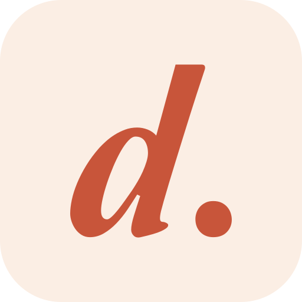

Clásico
ClásicoVibradores
Varita mágica
$42.990
juguetes & lencería & juego
Baja para recorrer
Hay cosas que se compran con la luz apagada. Nosotros la prendimos. Duraznito es la mañana después de no haber dormido: sábana blanca, luz de ventana y un solo objeto con color. Un sexshop que se siente como una tienda de diseño, donde nada da vergüenza.

Sábana y nácar de fondo, tinta para leer. Nada de beige, franjas de color ni barras oscuras: el aire es parte del lujo.
La interfaz no compite: el rosa, el ciruela o el vidrio aparecen en la foto. El vino es el único acento, y se usa poco.
Los juguetes se muestran como objetos de diseño: escultóricos, discretos, nunca explícitos. Se puede dejar abierta la pestaña.
El movimiento es lento y suave, como abrir los ojos: desenfoque a nítido, luz que cruza, una d que respira. Nunca nervioso.
El wordmark sale de los contornos reales de Amperzand, en vector. Va siempre en minúscula, en tinta, sábana o vino, y descansa sobre la línea de base como si estuviera escrito a mano.

«d.»: el logo en 1:1.
Cuando no cabe la palabra, firma la d con su punto. Es el mismo punto final de cada titular de la marca, en vino: lo que decimos, lo decimos con punto. Se lee hasta en 16 px.
Ícono en la pantalla de inicio
Avatar de Instagram y WhatsApp

Duraznito · Juguetes, lencería…Pestaña del navegador (16 px)
Seis gestos con nombre. Cada uno tiene un lugar en la tienda o en redes, una duración y una curva. Toca cada uno y repítelo.
Trazo · el logo se escribe con tinta y luego se rellena. Portada, cierre de videos, carga inicial. 2,6 s · curva de marca.
Carga · la d se recorre a sí misma mientras algo espera (pago, bolsa, búsqueda). En botones va a 18 px. 1,6 s por vuelta.
para no querer dormir.
Despertar · el texto pasa de desenfocado a nítido, palabra por palabra, como abrir los ojos. Titulares de banner y de redes. 1,2 s, 90 ms entre palabras.

Persiana · una banda de luz de ventana cruza la foto. Hover de producto en la tienda. 1,4 s.
tú & yo & lo que surja
Ampersand · el & de Amperzand es el ornamento de la marca: une ideas y se mueve como un guiño. Separadores, stickers, cierres de historias.
Respira · la d late muy lento cuando algo espera tu acción: bolsa vacía, sin resultados, vuelve pronto. 3,6 s.
La tienda vive de día: sábana, nácar y tinta. La noche es el desvelo: la misma marca en negro tinta, para redes, empaque y campañas nocturnas. Prueba el interruptor del dock.
Contraste medido en vivo con los colores del tema activo (WCAG). AA pide 4,5:1 en texto normal.
El color de verdad lo traen los productos.
 rosa empolvadociruela
rosa empolvadociruela mantequilla
mantequilla ámbar vidrio
ámbar vidrio acero y cristal
acero y cristal cuero negro
cuero negroAmperzand dice; Inter vende. Amperzand va en minúscula, en titulares de hasta seis palabras y nombres de categoría. La fuente original no traía acentos: los dibujamos con el trazo del punto de la i (Amperzand-ES).
¿qué tienes ganas de probar?
Dibujados por nosotros para que Amperzand escriba en español.
Inter · la que no estorba
Aa 123
Regular 400 · Medium 500 · Semibold 600. En Apple cae a SF Pro; en Shopify se sirve desde su CDN.
Un vidrio blanco y lechoso, como luz filtrada por una cortina. Se usa poco y solo en piezas chicas que flotan sobre fotos. Mueve los controles.
Son las mismas clases que usa el tema de Shopify. Todo responde de verdad: pasa el mouse, toca, agrega a la bolsa.
Botones.boton
Uno solo negro por pantalla. Al cargar, la d recorre su trazo dentro del botón.
Búsqueda y filtros.gv-buscar · .gv-chip
Tarjeta de producto.product-card
ClásicoVibradores
$42.990
Banner y controles.carrusel · .vidrio
Proporción 2,8:1 en escritorio y 1:1 en celular. El texto vive en la mitad izquierda; el vidrio solo en la cápsula de control.
Los juguetes se fotografían como electrónica premium: objetos escultóricos sobre papel nácar o sábana blanca, con luz suave desde arriba a la izquierda. Todas parecen una sola sesión.


Sí
No
SHARED STYLE (Duraznito · producto) — usar con Codex/ChatGPT - Brand: "Duraznito", premium Chilean intimate-wellness e-commerce. Products photographed like premium consumer electronics (Apple / Dyson product photography): sculptural, clean, discreet, elegant, never explicit, never anatomical. - SET: seamless warm-white paper backdrop (#F5F3F0), or a crisp white percale bed sheet for brand scenes; no props. - LIGHT: large soft window daylight, 5000K, from upper left through big diffusion; gentle contact shadow to lower right; subtle long specular highlight; contrast ~3:1. - CAMERA: medium-format still-life (Phase One IQ4, 120mm macro), f/11, tack sharp. - MATERIALS: matte soft-touch silicone with faint satin sheen, polished rose-gold or chrome accents, clear borosilicate glass where stated. No printed text or logos. - COLOR GRADE: neutral true whites (not yellow, blue or pink), product colors accurate and slightly muted, soft roll-off, no HDR, no vignette. - NEGATIVES: no text, letters, numbers, logos, packaging, labels, watermarks; no people or body parts; no flowers, petals, candles, silk drapes or props; no neon, no glitter, no plastic toy look. - OUTPUT: photographic. Portrait 1024x1536, product centered at ~50% of the width with even margins. Banners: 1536x1024 with the left 50% empty and all content inside the central 18–82% band.
La marca fuera de la tienda: un post, una historia con su zona segura y la caja que llega a la puerta sin decir qué trae.
una rosa que no se marchita.
$19.990Post 4:5 · titular en Amperzand arriba, producto al centro, logo y precio abajo.

la luz hace el resto.
Desliza para verloHistoria 9:16 · texto solo dentro de la zona segura (línea punteada).
Empaque discreto · caja nácar lisa, una d en relieve y un sello vino. Nada por fuera dice qué trae.
gracias por desvelarte.
Tarjeta dentro de la caja · vino
De tú, en español de Chile. La bartender del hotel a las 2 de la mañana: sabe qué te va a gustar, no se sonroja y no le cuenta a nadie. Elegante, pero tira la talla.
para no querer dormir.
ni el conserje se entera.
le dicen masajeador. nadie le cree.
todavía nada. y la noche es larga.
Atrévete a descubrir tu placer 🔥
¡¡OFERTA HOT IMPERDIBLE!!
Juguetitos sexys para empoderarte